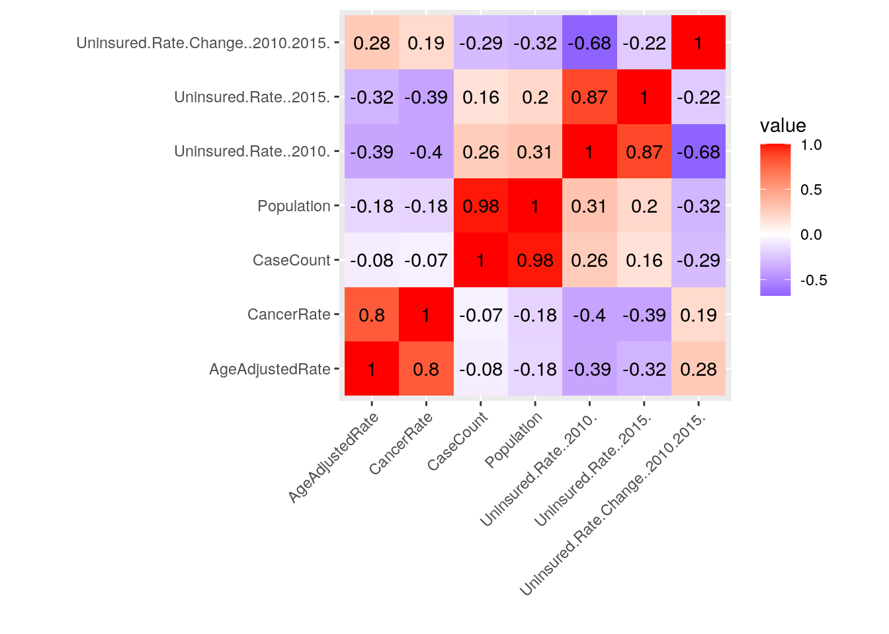
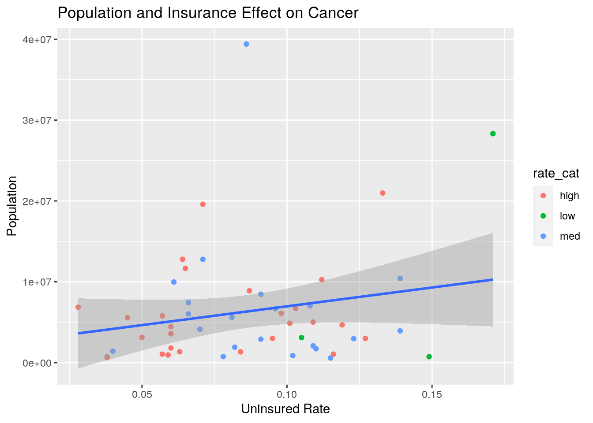
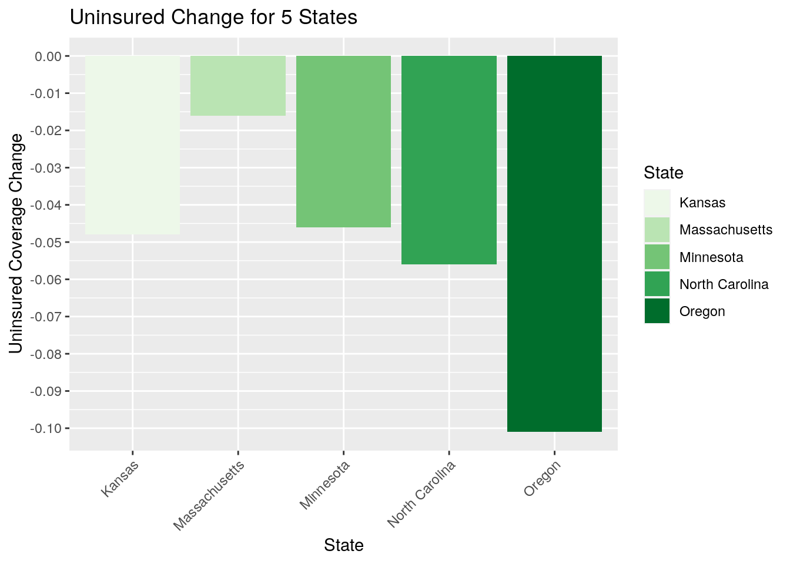
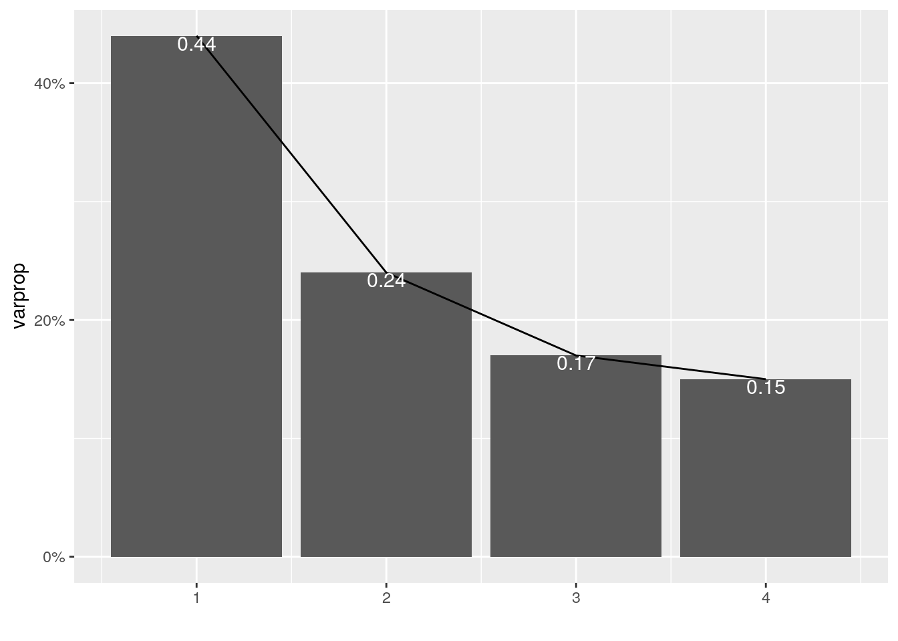
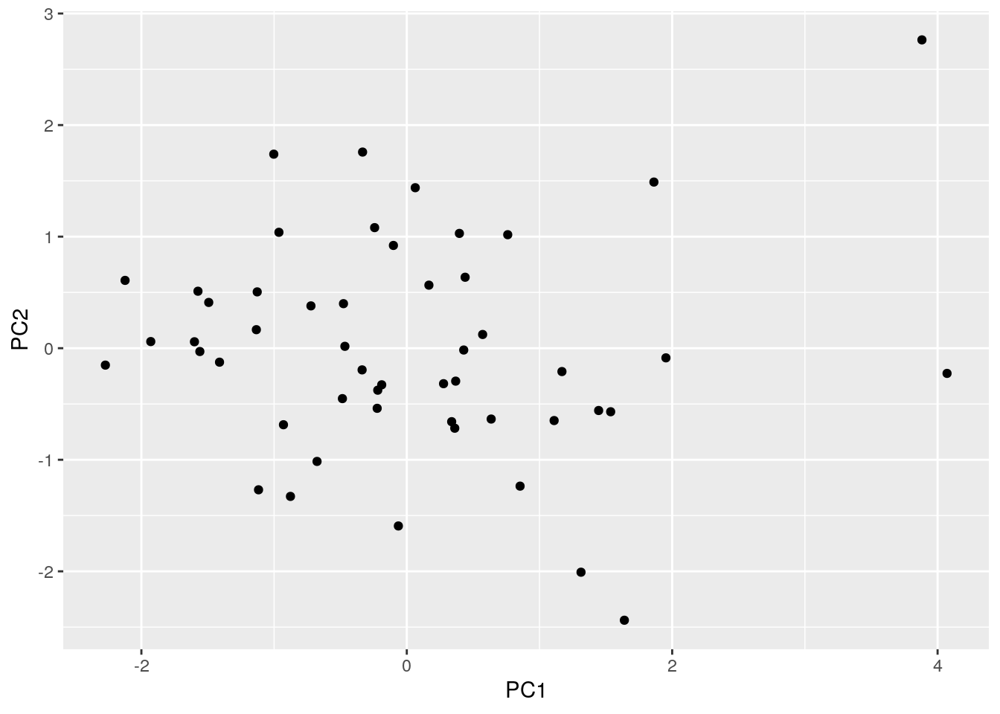
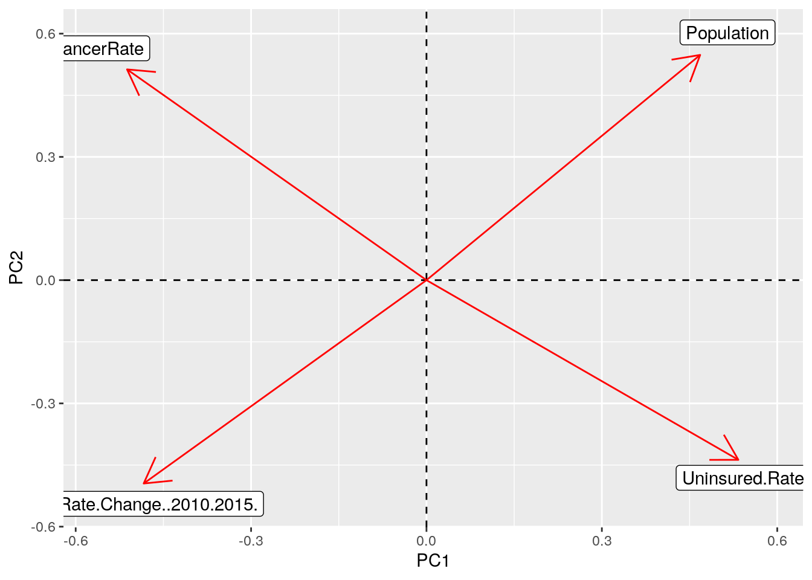

#For this project I decided to look at all 50 states and their cancer rates, as well as their levels of uninsurance. I chose this type of data because I’m in a sociology class about cancer this semester, and I find that a lack of healthcare coverage is a huge barrier to recieving proper care. I wanted to see if there was any correlation in cancer occurence and insurance coverage following the implementation of the ACA. I also thought the addition of population size was interesting, and wondered if larger states panned out differently than smaller states in terms of cancer incidence.
library(ggplot2)
library(tidyverse)## ── Attaching packages ─────────────────────────────────────── tidyverse 1.3.0 ──## ✓ tibble 3.0.4 ✓ dplyr 1.0.2
## ✓ tidyr 1.1.2 ✓ stringr 1.4.0
## ✓ readr 1.4.0 ✓ forcats 0.5.0
## ✓ purrr 0.3.4## ── Conflicts ────────────────────────────────────────── tidyverse_conflicts() ──
## x dplyr::filter() masks stats::filter()
## x dplyr::lag() masks stats::lag()healthcoverage <- read.csv("states.csv")
cancercases <- read.csv("USCS_OverviewMap.csv")
glimpse(healthcoverage)## Rows: 52
## Columns: 4
## $ State <fct> Alabama, Alaska, Arizona, Arkansas,…
## $ Uninsured.Rate..2010. <dbl> 0.146, 0.199, 0.169, 0.175, 0.185, …
## $ Uninsured.Rate..2015. <dbl> 0.101, 0.149, 0.108, 0.095, 0.086, …
## $ Uninsured.Rate.Change..2010.2015. <dbl> -0.045, -0.050, -0.061, -0.080, -0.…glimpse(cancercases)## Rows: 51
## Columns: 8
## $ State <fct> Wyoming, Nevada, Rhode Island, Colorado, Georgia, Mon…
## $ CancerType <fct> 'All Types of Cancer', 'All Types of Cancer', 'All Ty…
## $ Year <fct> '2017', '2017', '2017', '2017', '2017', '2017', '2017…
## $ Sex <fct> 'Male and Female', 'Male and Female', 'Male and Femal…
## $ Race <fct> 'All Races', 'All Races', 'All Races', 'All Races', '…
## $ AgeAdjustedRate <dbl> 411.7, 405.4, 434.3, 394.3, 461.3, 466.9, 400.1, 442.…
## $ CaseCount <int> 2875, 14105, 5841, 24226, 52690, 6426, 114402, 31735,…
## $ Population <int> 578934, 2972405, 1056486, 5615902, 10413055, 1053090,…library(dplyr)
fullprojdata <- inner_join(cancercases, healthcoverage, by="State")
glimpse(fullprojdata)## Rows: 51
## Columns: 11
## $ State <fct> Wyoming, Nevada, Rhode Island, Colo…
## $ CancerType <fct> 'All Types of Cancer', 'All Types o…
## $ Year <fct> '2017', '2017', '2017', '2017', '20…
## $ Sex <fct> 'Male and Female', 'Male and Female…
## $ Race <fct> 'All Races', 'All Races', 'All Race…
## $ AgeAdjustedRate <dbl> 411.7, 405.4, 434.3, 394.3, 461.3, …
## $ CaseCount <int> 2875, 14105, 5841, 24226, 52690, 64…
## $ Population <int> 578934, 2972405, 1056486, 5615902, …
## $ Uninsured.Rate..2010. <dbl> 0.149, 0.226, 0.122, 0.159, 0.197, …
## $ Uninsured.Rate..2015. <dbl> 0.115, 0.123, 0.057, 0.081, 0.139, …
## $ Uninsured.Rate.Change..2010.2015. <dbl> -0.034, -0.103, -0.065, -0.078, -0.…#I decided to complete an inner join because it was the join that would create the most cohesive data set. A full join would have added an extra observation (the United States as one of the “states”) that would have several NA variables. I wanted to drop that case, and so I completed an inner join, which dropped the US observation which had come from the insurance dataset.
falsetidy <- fullprojdata %>% pivot_longer(c("Uninsured.Rate..2010.","Uninsured.Rate..2015."), names_to="UninsuredYear", values_to="PctUninsured")falsetidy %>% pivot_wider(names_from="UninsuredYear", values_from="PctUninsured")## # A tibble: 51 x 11
## State CancerType Year Sex Race AgeAdjustedRate CaseCount Population
## <fct> <fct> <fct> <fct> <fct> <dbl> <int> <int>
## 1 Wyom… 'All Type… '201… 'Mal… 'All… 412. 2875 578934
## 2 Neva… 'All Type… '201… 'Mal… 'All… 405. 14105 2972405
## 3 Rhod… 'All Type… '201… 'Mal… 'All… 434. 5841 1056486
## 4 Colo… 'All Type… '201… 'Mal… 'All… 394. 24226 5615902
## 5 Geor… 'All Type… '201… 'Mal… 'All… 461. 52690 10413055
## 6 Mont… 'All Type… '201… 'Mal… 'All… 467. 6426 1053090
## 7 Texas 'All Type… '201… 'Mal… 'All… 400. 114402 28322717
## 8 Mary… 'All Type… '201… 'Mal… 'All… 443. 31735 6024891
## 9 Idaho 'All Type… '201… 'Mal… 'All… 436. 8624 1718904
## 10 New … 'All Type… '201… 'Mal… 'All… 361. 9261 2093395
## # … with 41 more rows, and 3 more variables:
## # Uninsured.Rate.Change..2010.2015. <dbl>, Uninsured.Rate..2010. <dbl>,
## # Uninsured.Rate..2015. <dbl>#In terms of tidyness, the data was overall pretty tidy. As a result, I decided to complete a false tidy. I first transformed by data longer and created a new variable called Uninsured Year, and made the values the percent uninsured. Then, I retransformed it wider by taking the names from the Uninsured Year variable and the values from percent uninsured. I realized later on that a subset of my data statistics needed to be tidyed since it was extremely wide, but I decided to leave this in here as well just to demostrate the usage of tidying.
fullprojdata %>% filter(Uninsured.Rate..2015. >= .12)## State CancerType Year Sex Race
## 1 Nevada 'All Types of Cancer' '2017' 'Male and Female' 'All Races'
## 2 Georgia 'All Types of Cancer' '2017' 'Male and Female' 'All Races'
## 3 Texas 'All Types of Cancer' '2017' 'Male and Female' 'All Races'
## 4 Alaska 'All Types of Cancer' '2017' 'Male and Female' 'All Races'
## 5 Mississippi 'All Types of Cancer' '2017' 'Male and Female' 'All Races'
## 6 Oklahoma 'All Types of Cancer' '2017' 'Male and Female' 'All Races'
## 7 Florida 'All Types of Cancer' '2017' 'Male and Female' 'All Races'
## AgeAdjustedRate CaseCount Population Uninsured.Rate..2010.
## 1 405.4 14105 2972405 0.226
## 2 461.3 52690 10413055 0.197
## 3 400.1 114402 28322717 0.237
## 4 404.5 2917 739786 0.199
## 5 465.3 16585 2989663 0.182
## 6 432.3 19871 3932640 0.189
## 7 426.1 124804 20976812 0.213
## Uninsured.Rate..2015. Uninsured.Rate.Change..2010.2015.
## 1 0.123 -0.103
## 2 0.139 -0.058
## 3 0.171 -0.066
## 4 0.149 -0.050
## 5 0.127 -0.055
## 6 0.139 -0.050
## 7 0.133 -0.080fullprojdata %>% arrange(desc(Population))## State CancerType Year Sex
## 1 California 'All Types of Cancer' '2017' 'Male and Female'
## 2 Texas 'All Types of Cancer' '2017' 'Male and Female'
## 3 Florida 'All Types of Cancer' '2017' 'Male and Female'
## 4 New York 'All Types of Cancer' '2017' 'Male and Female'
## 5 Pennsylvania 'All Types of Cancer' '2017' 'Male and Female'
## 6 Illinois 'All Types of Cancer' '2017' 'Male and Female'
## 7 Ohio 'All Types of Cancer' '2017' 'Male and Female'
## 8 Georgia 'All Types of Cancer' '2017' 'Male and Female'
## 9 North Carolina 'All Types of Cancer' '2017' 'Male and Female'
## 10 Michigan 'All Types of Cancer' '2017' 'Male and Female'
## 11 New Jersey 'All Types of Cancer' '2017' 'Male and Female'
## 12 Virginia 'All Types of Cancer' '2017' 'Male and Female'
## 13 Washington 'All Types of Cancer' '2017' 'Male and Female'
## 14 Arizona 'All Types of Cancer' '2017' 'Male and Female'
## 15 Massachusetts 'All Types of Cancer' '2017' 'Male and Female'
## 16 Tennessee 'All Types of Cancer' '2017' 'Male and Female'
## 17 Indiana 'All Types of Cancer' '2017' 'Male and Female'
## 18 Missouri 'All Types of Cancer' '2017' 'Male and Female'
## 19 Maryland 'All Types of Cancer' '2017' 'Male and Female'
## 20 Wisconsin 'All Types of Cancer' '2017' 'Male and Female'
## 21 Colorado 'All Types of Cancer' '2017' 'Male and Female'
## 22 Minnesota 'All Types of Cancer' '2017' 'Male and Female'
## 23 South Carolina 'All Types of Cancer' '2017' 'Male and Female'
## 24 Alabama 'All Types of Cancer' '2017' 'Male and Female'
## 25 Louisiana 'All Types of Cancer' '2017' 'Male and Female'
## 26 Kentucky 'All Types of Cancer' '2017' 'Male and Female'
## 27 Oregon 'All Types of Cancer' '2017' 'Male and Female'
## 28 Oklahoma 'All Types of Cancer' '2017' 'Male and Female'
## 29 Connecticut 'All Types of Cancer' '2017' 'Male and Female'
## 30 Iowa 'All Types of Cancer' '2017' 'Male and Female'
## 31 Utah 'All Types of Cancer' '2017' 'Male and Female'
## 32 Arkansas 'All Types of Cancer' '2017' 'Male and Female'
## 33 Mississippi 'All Types of Cancer' '2017' 'Male and Female'
## 34 Nevada 'All Types of Cancer' '2017' 'Male and Female'
## 35 Kansas 'All Types of Cancer' '2017' 'Male and Female'
## 36 New Mexico 'All Types of Cancer' '2017' 'Male and Female'
## 37 Nebraska 'All Types of Cancer' '2017' 'Male and Female'
## 38 West Virginia 'All Types of Cancer' '2017' 'Male and Female'
## 39 Idaho 'All Types of Cancer' '2017' 'Male and Female'
## 40 Hawaii 'All Types of Cancer' '2017' 'Male and Female'
## 41 New Hampshire 'All Types of Cancer' '2017' 'Male and Female'
## 42 Maine 'All Types of Cancer' '2017' 'Male and Female'
## 43 Rhode Island 'All Types of Cancer' '2017' 'Male and Female'
## 44 Montana 'All Types of Cancer' '2017' 'Male and Female'
## 45 Delaware 'All Types of Cancer' '2017' 'Male and Female'
## 46 South Dakota 'All Types of Cancer' '2017' 'Male and Female'
## 47 North Dakota 'All Types of Cancer' '2017' 'Male and Female'
## 48 Alaska 'All Types of Cancer' '2017' 'Male and Female'
## 49 District of Columbia 'All Types of Cancer' '2017' 'Male and Female'
## 50 Vermont 'All Types of Cancer' '2017' 'Male and Female'
## 51 Wyoming 'All Types of Cancer' '2017' 'Male and Female'
## Race AgeAdjustedRate CaseCount Population Uninsured.Rate..2010.
## 1 'All Races' 392.4 170784 39399349 0.185
## 2 'All Races' 400.1 114402 28322717 0.237
## 3 'All Races' 426.1 124804 20976812 0.213
## 4 'All Races' 480.6 115007 19590719 0.119
## 5 'All Races' 471.2 79340 12790447 0.102
## 6 'All Races' 458.5 69222 12786196 0.138
## 7 'All Races' 458.9 67268 11664129 0.123
## 8 'All Races' 461.3 52690 10413055 0.197
## 9 'All Races' 458.2 57037 10270800 0.168
## 10 'All Races' 435.4 54793 9976447 0.124
## 11 'All Races' 482.4 52841 8888543 0.132
## 12 'All Races' 400.0 39910 8465207 0.131
## 13 'All Races' 435.1 37522 7425432 0.142
## 14 'All Races' 374.9 32494 7048876 0.169
## 15 'All Races' 444.7 37769 6863246 0.044
## 16 'All Races' 457.8 37623 6708794 0.144
## 17 'All Races' 434.8 34318 6660082 0.148
## 18 'All Races' 452.7 34379 6108612 0.132
## 19 'All Races' 442.6 31735 6024891 0.113
## 20 'All Races' 448.3 32651 5792051 0.094
## 21 'All Races' 394.3 24226 5615902 0.159
## 22 'All Races' 472.3 31249 5568155 0.091
## 23 'All Races' 434.4 27762 5021219 0.175
## 24 'All Races' 446.9 27137 4875120 0.146
## 25 'All Races' 478.6 26125 4670818 0.178
## 26 'All Races' 510.2 27714 4453874 0.153
## 27 'All Races' 412.2 21528 4146592 0.171
## 28 'All Races' 432.3 19871 3932640 0.189
## 29 'All Races' 464.7 21297 3573880 0.091
## 30 'All Races' 477.3 18600 3143637 0.093
## 31 'All Races' 397.1 10951 3103118 0.153
## 32 'All Races' 471.4 17474 3002997 0.175
## 33 'All Races' 465.3 16585 2989663 0.182
## 34 'All Races' 405.4 14105 2972405 0.226
## 35 'All Races' 450.6 15331 2910689 0.139
## 36 'All Races' 361.1 9261 2093395 0.196
## 37 'All Races' 471.3 10491 1917575 0.115
## 38 'All Races' 482.4 12143 1817048 0.146
## 39 'All Races' 436.3 8624 1718904 0.177
## 40 'All Races' 418.9 7561 1424203 0.079
## 41 'All Races' 473.6 8529 1349767 0.111
## 42 'All Races' 471.6 9061 1335063 0.101
## 43 'All Races' 434.3 5841 1056486 0.122
## 44 'All Races' 466.9 6426 1053090 0.173
## 45 'All Races' 445.7 5617 957078 0.097
## 46 'All Races' 449.6 4739 873286 0.124
## 47 'All Races' 455.5 3878 755176 0.098
## 48 'All Races' 404.5 2917 739786 0.199
## 49 'All Races' 429.5 2907 695691 0.076
## 50 'All Races' 454.4 3901 624525 0.080
## 51 'All Races' 411.7 2875 578934 0.149
## Uninsured.Rate..2015. Uninsured.Rate.Change..2010.2015.
## 1 0.086 -0.099
## 2 0.171 -0.066
## 3 0.133 -0.080
## 4 0.071 -0.048
## 5 0.064 -0.038
## 6 0.071 -0.067
## 7 0.065 -0.058
## 8 0.139 -0.058
## 9 0.112 -0.056
## 10 0.061 -0.063
## 11 0.087 -0.045
## 12 0.091 -0.040
## 13 0.066 -0.076
## 14 0.108 -0.061
## 15 0.028 -0.016
## 16 0.103 -0.041
## 17 0.096 -0.052
## 18 0.098 -0.034
## 19 0.066 -0.047
## 20 0.057 -0.037
## 21 0.081 -0.078
## 22 0.045 -0.046
## 23 0.109 -0.066
## 24 0.101 -0.045
## 25 0.119 -0.059
## 26 0.060 -0.093
## 27 0.070 -0.101
## 28 0.139 -0.050
## 29 0.060 -0.031
## 30 0.050 -0.043
## 31 0.105 -0.048
## 32 0.095 -0.080
## 33 0.127 -0.055
## 34 0.123 -0.103
## 35 0.091 -0.048
## 36 0.109 -0.087
## 37 0.082 -0.033
## 38 0.060 -0.086
## 39 0.110 -0.067
## 40 0.040 -0.039
## 41 0.063 -0.048
## 42 0.084 -0.017
## 43 0.057 -0.065
## 44 0.116 -0.057
## 45 0.059 -0.038
## 46 0.102 -0.022
## 47 0.078 -0.020
## 48 0.149 -0.050
## 49 0.038 -0.038
## 50 0.038 -0.042
## 51 0.115 -0.034fullprojdata %>% select(State, CaseCount, Uninsured.Rate.Change..2010.2015.)## State CaseCount Uninsured.Rate.Change..2010.2015.
## 1 Wyoming 2875 -0.034
## 2 Nevada 14105 -0.103
## 3 Rhode Island 5841 -0.065
## 4 Colorado 24226 -0.078
## 5 Georgia 52690 -0.058
## 6 Montana 6426 -0.057
## 7 Texas 114402 -0.066
## 8 Maryland 31735 -0.047
## 9 Idaho 8624 -0.067
## 10 New Mexico 9261 -0.087
## 11 Utah 10951 -0.048
## 12 California 170784 -0.099
## 13 Alaska 2917 -0.050
## 14 Oregon 21528 -0.101
## 15 Virginia 39910 -0.040
## 16 District of Columbia 2907 -0.038
## 17 Missouri 34379 -0.034
## 18 Mississippi 16585 -0.055
## 19 West Virginia 12143 -0.086
## 20 Tennessee 37623 -0.041
## 21 Minnesota 31249 -0.046
## 22 Oklahoma 19871 -0.050
## 23 Florida 124804 -0.080
## 24 Arkansas 17474 -0.080
## 25 Kansas 15331 -0.048
## 26 North Carolina 57037 -0.056
## 27 South Dakota 4739 -0.022
## 28 Hawaii 7561 -0.039
## 29 Pennsylvania 79340 -0.038
## 30 Kentucky 27714 -0.093
## 31 Maine 9061 -0.017
## 32 South Carolina 27762 -0.066
## 33 Alabama 27137 -0.045
## 34 Vermont 3901 -0.042
## 35 Washington 37522 -0.076
## 36 Ohio 67268 -0.058
## 37 North Dakota 3878 -0.020
## 38 New Jersey 52841 -0.045
## 39 Delaware 5617 -0.038
## 40 New Hampshire 8529 -0.048
## 41 Nebraska 10491 -0.033
## 42 New York 115007 -0.048
## 43 Iowa 18600 -0.043
## 44 Illinois 69222 -0.067
## 45 Wisconsin 32651 -0.037
## 46 Indiana 34318 -0.052
## 47 Louisiana 26125 -0.059
## 48 Arizona 32494 -0.061
## 49 Massachusetts 37769 -0.016
## 50 Michigan 54793 -0.063
## 51 Connecticut 21297 -0.031completedata <- fullprojdata %>% mutate(CancerRate = CaseCount/Population)complete_stats <- completedata %>% summarize_at(6:11, .funs = list(mean = mean, sd = sd, var = var, min = min, max = max, n_distinct = n_distinct))
finaldata <- completedata %>% mutate(rate_cat = case_when(CancerRate>.0055 ~ "high", CancerRate<=.0055 & .0042<=CancerRate ~ "med", CancerRate<.0042 ~ "low"))
complete_stats_grouped <- finaldata %>% group_by(rate_cat) %>% summarize_at(6:12, .funs = list(mean = mean, sd = sd, var = var, min = min, max = max, n_distinct = n_distinct))
tidy.stats <- complete_stats %>% pivot_longer(contains("_"), names_to = "name", values_to = "value") %>% separate(name, c("name", "function"), sep = "_") %>% pivot_wider(names_from = "function", values_from = "value") %>%
glimpse()## Warning: Expected 2 pieces. Additional pieces discarded in 6 rows [31, 32, 33,
## 34, 35, 36].## Rows: 6
## Columns: 7
## $ name <chr> "AgeAdjustedRate", "CaseCount", "Population", "Uninsured.Rate..2…
## $ mean <dbl> 4.430647e+02, 3.335912e+04, 6.375434e+06, 1.415490e-01, 8.721569…
## $ sd <dbl> 3.107703e+01, 3.498512e+04, 7.294685e+06, 4.201300e-02, 3.172527…
## $ var <dbl> 9.657815e+02, 1.223958e+09, 5.321243e+13, 1.765093e-03, 1.006493…
## $ min <dbl> 361.100, 2875.000, 578934.000, 0.044, 0.028, -0.103
## $ max <dbl> 510.200, 170784.000, 39399349.000, 0.237, 0.171, -0.016
## $ n <dbl> 50, 51, 51, 45, 42, 39#At first, I played around with the dplyr functions just to see what I could do. At first for filter, I wanted to filter only the states with an uninsured rate of greater than 15%. Little did I know I’d end up with only Texas (how sad). I decided to change that criteria to states with an uninsured rate of greater than 12%, and that rendered a list of seven states. I then arranged them by population from greatest to least, and then selected the three variables I was most interested in: state, cancer cases, and change in insurance coverage. The original data gave cancer cases as a crude value, so I decided to mutate and create a cancer RATE variable that utilized data from the cancer cases and population variables. This gives a better per capita view of cancer. I also summarized all the data(avg, sd, min, max, var, n_distinct) both before and after the addition of a new variable. For the summary after the addition of the new variable, I grouped the statistics by cancer rate (high, med, low). I had to tidy the summary statistics, as it was extremely wide and hard to look at otherwise.
finaldata %>% select_if(is.numeric) %>% cor %>% as.data.frame %>% rownames_to_column %>% pivot_longer(-1) %>% ggplot(aes(rowname,name,fill=value))+ geom_tile() + geom_text(aes(label=round(value,2)))+xlab("")+ylab("")+coord_fixed()+scale_fill_gradient2(low="blue",mid="white",high="red")+theme(axis.text.x = element_text(angle = 45, hjust = 1)) #Though the correlation heat map at first shows signs of a few bright red, extremely correlated variables, further investigation shows they’re not groundbreaking correlates. The correlation of Cancer Rate and Age Adjusted Rate is unsurprising, as they are both rates of cancer in each state. The population and case count correlation i unsurprising because naturally as population increases, the overall number of cancer cases will increase. Finally, the correlation between Uninsured Rates in 2010 and 2015 is unsurprising because despite the ACA, insurance rates wwould likely still be similar and fluctuate in similar ways. There does seem to be a weak correlation between uninsured rate in 2015 and cancer rate, which is interesting especially considering it’s a negative correlation.
plot2 <- ggplot(finaldata, aes(Uninsured.Rate..2015., Population)) + geom_point(aes(color=rate_cat)) + geom_smooth(method="lm")
plot2 + ggtitle("Population and Insurance Effect on Cancer") + ylab("Population") + xlab("Uninsured Rate")## `geom_smooth()` using formula 'y ~ x' #This scatterplot maps the population in relation to uninsured rate, as well as color coding the cancer rate type (high/med/low). Again, there does not appear to be any strong correlation between the three variable I was initially most interested in. Uninsured rate seems to be all over the map in relation to population. One very weak correlation that could be present is that all three low cancer rate states had higher rates of uninsurance, which is actually quite the opposite of what I expected.
five.states <- finaldata %>% filter(State %in% c("Minnesota",
"Oregon", "Kansas", "North Carolina", "Massachusetts")) %>%
select(State, Uninsured.Rate.Change..2010.2015., Population)
ggplot(five.states, aes(State, fill = State)) + geom_bar(aes(y = Uninsured.Rate.Change..2010.2015.),
stat = "summary", fun.y = "mean") + scale_y_continuous(breaks = seq(0, -.11, -.01)) + geom_errorbar(aes(y = Uninsured.Rate.Change..2010.2015.), stat = "summary",
width = 0.5) + ylab("Uninsured Coverage Change") + ggtitle("Uninsured Change for 5 States") +
scale_fill_brewer(palette = "DarkMint") + xlab("State")+ theme(axis.text.x = element_text(angle = 45, hjust = 1))## Warning: Ignoring unknown parameters: fun.y## Warning in pal_name(palette, type): Unknown palette DarkMint## No summary function supplied, defaulting to `mean_se()`
## No summary function supplied, defaulting to `mean_se()`
#For this graph, I wanted to visualize the change in insurance coverage after the implementation of the ACA. I chose five randomly chosen states to see how the new policy increased their insurance coverage. It seems like the policy overall increased insurance coverage, thus decreasing the uninsured rate.
final.data <- finaldata %>% select(State, Population, Uninsured.Rate..2015., Uninsured.Rate.Change..2010.2015.,
CancerRate)
data.numbers <- final.data %>% select_if(is.numeric) %>% scale
pca.data <- princomp(data.numbers)
names(pca.data)## [1] "sdev" "loadings" "center" "scale" "n.obs" "scores" "call"summary(pca.data, loadings = T)## Importance of components:
## Comp.1 Comp.2 Comp.3 Comp.4
## Standard deviation 1.3134765 0.9680906 0.8170965 0.7690917
## Proportion of Variance 0.4399312 0.2389858 0.1702499 0.1508330
## Cumulative Proportion 0.4399312 0.6789171 0.8491670 1.0000000
##
## Loadings:
## Comp.1 Comp.2 Comp.3 Comp.4
## Population 0.468 0.548 0.693
## Uninsured.Rate..2015. 0.533 -0.437 0.723
## Uninsured.Rate.Change..2010.2015. -0.484 -0.495 0.715
## CancerRate -0.512 0.513 0.684eigval <- pca.data$sdev^2
varprop = round(eigval/sum(eigval), 2)
ggplot() + geom_bar(aes(y = varprop, x = 1:4), stat = "identity") +
xlab("") + geom_path(aes(y = varprop, x = 1:4)) + geom_text(aes(x = 1:4,
y = varprop, label = round(varprop, 3)), vjust = 1, col = "white",
size = 4) + scale_y_continuous(breaks = seq(0, 0.8, 0.2),
labels = scales::percent) + scale_x_continuous(breaks = 1:4)
eigen(cor(data.numbers))## eigen() decomposition
## $values
## [1] 1.7597250 0.9559434 0.6809996 0.6033320
##
## $vectors
## [,1] [,2] [,3] [,4]
## [1,] -0.4681412 0.5482307 0.69260691 0.02413506
## [2,] -0.5334691 -0.4373614 -0.03957624 0.72288273
## [3,] 0.4836836 -0.4949637 0.71534665 0.09664496
## [4,] 0.5121569 0.5130000 -0.08371708 0.68375274df<- data.frame(PC1 = pca.data$scores[, 1], PC2 = pca.data$scores[,
2])
ggplot(df, aes(PC1, PC2)) + geom_point()
State <- final.data$State
pca.data$scores %>% as.data.frame %>% cbind(State, .) %>% top_n(3,
Comp.1) #highest PC1## State Comp.1 Comp.2 Comp.3 Comp.4
## 1 Nevada 1.952767 -0.08662721 -1.923542 -0.03847254
## 2 Texas 4.071215 -0.22587986 1.749800 0.60801744
## 3 California 3.881997 2.76343263 1.765122 -1.14924497pca.data$scores %>% as.data.frame %>% cbind(State, .) %>% top_n(3,
wt = desc(Comp.1)) #lowest PC1## State Comp.1 Comp.2 Comp.3 Comp.4
## 1 Maine -2.271369 -0.15164199 0.6061643 1.4774350
## 2 Vermont -2.122919 0.60780544 -0.1767537 -0.2212832
## 3 Massachusetts -1.929284 0.05942959 1.3899939 -1.0462256pca.data$scores %>% as.data.frame %>% cbind(State, .) %>% top_n(3,
Comp.2) #highest PC2## State Comp.1 Comp.2 Comp.3 Comp.4
## 1 California 3.8819972 2.763433 1.765122 -1.14924497
## 2 West Virginia -1.0023306 1.739110 -1.619330 0.51652852
## 3 Kentucky -0.3331544 1.757896 -1.547927 0.03796902pca.data$scores %>% as.data.frame %>% cbind(State, .) %>% top_n(3,
wt = desc(Comp.2)) #lowest PC2## State Comp.1 Comp.2 Comp.3 Comp.4
## 1 Wyoming -0.06344391 -1.593333 0.1462565 0.302331571
## 2 Utah 1.31296988 -2.007829 0.1030332 -1.402614180
## 3 Alaska 1.63965107 -2.438244 -0.2934741 -0.007237513pca.data$loadings[1:4, 1:2] %>% as.data.frame %>% rownames_to_column %>%
ggplot() + geom_hline(aes(yintercept = 0), lty = 2) + geom_vline(aes(xintercept = 0),
lty = 2) + ylab("PC2") + xlab("PC1") + geom_segment(aes(x = 0,
y = 0, xend = Comp.1, yend = Comp.2), arrow = arrow(), col = "red") +
geom_label(aes(x = Comp.1 * 1.1, y = Comp.2 * 1.1, label = rowname))
#I decided to run a PCA on my data to see if there was variance in my data. I used cancer rate, population, uninsurance rate in 2015, and uninsurance rate change from 2010 to 2015 as my four variables. The scree plot showed PC1 and PC2 would account for 68% of the variance in my data, so I decided to use those two. PC1 had a negative correlation for uninsured rate change and cancer rate, and a positive correlation for population in uninsured rate in 2015 and population. PC2 had a negative correlation for uninsured rate in 2015 and uninsured rate change, and a positive correlation for population and cancer rate. The scatterplot confirms that variance is greatest for PC1.The arrow plot interestingly points each variable into a different quadrant, but this makes sense considering the correlations seen from the loadings summary. Overall, it seems my questions about cancer rate and insurance coverage cannot be answered from the datasets I chose for this project.